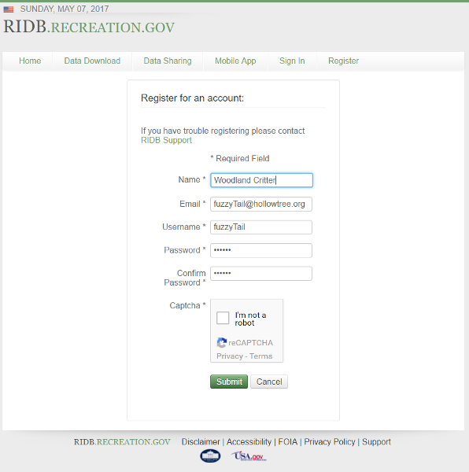
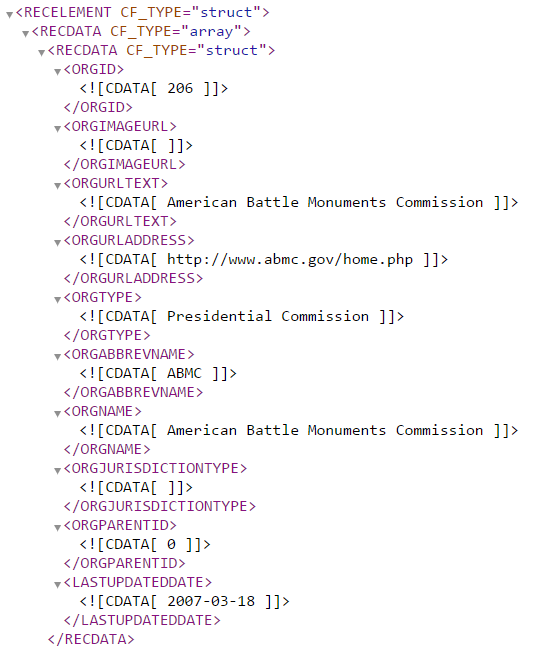
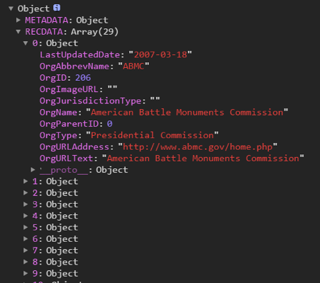

Conservation means the wise use of the earth and its resources for the lasting good.
Between every two pine trees there is a door leading to a new way of life.
The Recreation Information Database (RIDB) provides users with a vast resource of information regarding recreational opportunities, across numerous Federal land management agencies, as well as state parks. Information is able to be queried by state, activity, management agency.
RIBD.RECREATION.GOV has provided a RESTful API to allow the general public the opportunity to access this nationwide wealth of information. The possibilitiies are seemingly endless. A rental cabin agency in the Smoky Mountains can use this information within their own websites to provide potential vacation renters with nearby site seeing opportunities. A bait shop could identify nearby public fishing locations. Outdoor adventure suppliers can provide potential clients with information on local camping, hiking or canoeing opportunities. A local Tourism Development Council can use the information in efforts to attract more visitors to their cities. A travel guide can use the data to find handicap accessible campsites for disabled clients, for find all the historical tours that leave at specific times or date ranges. Mountain bike groups can deterime with trails allow mounitan bike usage, as well as the width, length, and surface type of those trails. Without a question, the enterprising developer can do a great deal with this data.
A RESTful API is an Aplication Program Interface (API) that uses representational state transer (REST) protocols to utilize HTML requests to GET, PUT, POST, and DELETE data. GET requests are generally responded in a Javascript Object Notation (JSON) format or extensible Markup Language (XML). These requests can then be process to taylor to a specifc need. In short, RESTFUL APIs allow programmers to retrieve and process information, from other servers, to use and display within their own websites or applications.
RIDB proivdes a pretty solid base for getting started with their API. Information about endpoints, obtaining API keys for authentication, and information about available data formats are prominatly displayed. Just about any API out there will require users to sign up to obtain a 'key' to access the database, the RIDB is no different. Keys are free, and immediately available by clicking the RIDB key link. From there it is a simple form: name, email, username and password and you get a key id to pass to the endpoint API calls. 
If we look at the RIDB Documentation a little further down the page we find the first provided example of the type of request we can initiate to obtain the list of Organizations who participate in the RIDB.
The documentation tells us in order to pull the list of organizations, we issue the request: GET https://ridb.recreation.gov/api/v1/organizations/.
Of course we will need to include our API key, and the code then becomes:
GET https://ridb.recreation.gov/api/v1/organizations/?apikey=INSERT_YOUR_KEY
Type the URL directly into a browser address bar, and you get something that looks similar to:

This is only a partial representation of the entire data set. A first glance it may be a terrifing list of information. However, we have the tools necessary to make this into something useful. Using the example information from the CS290 Module 6 Lectures, if we create a new HMLHttpRequst(); in JavaScript, we can parse this data into a JavaScript object.
The following code will preform an aysnocronous GET request and output the result to the console:
var organizationRequest = new XMLHttpRequest();
organizationRequest.open('GET', 'https://ridb.recreation.gov/api/v1/organizations/?apikey=YOUR_KEY', true);
organizationRequest.addEventListener('load', function(){
if (organizationRequest.status >=200 && organizationRequest.status <= 400){
console.log(JSON.parse(organizationRequest.responseText));
}
else {
console.log("Error in network request: " + organizationRequest.statusText);
;}
;});
organizationRequest.send(null);
The above code will produce the following in the console window.

As you can see, it is begining to look like something we can work with. But before we go any further, lets pause to understand what is going on in the JavaScript that produced this output.
We will start at the top. var organizationRequest = new XMLHttpRequest();
This assigns a new function object to a variable called organizationRequest. Yes, a function object. More information on that concept can be found on MDN.
The next line: organizationRequest.open('GET', 'https://ridb.recreation.gov/api/v1/organizations/?apikey=YOUR_KEY', true); opens the request with three variables. The first variable describes the type of request, in this case it is a "GET" request. The other most common HTTP request type is "POST". More on the difference between these two types can be found at w3schools.com The second variable is the URL that will be receiving the request, with your unique API key appended to the end. The third variable, declares if the function will be synchronous (false) and will pause and wait for a response from the request server, or asynchronous (true) when the prograom will continue to work on other issues until it get a signal from the server.
The line organizationRequest.addEventListener('load', function(){ is really what takes advantage of the asychronous nature of the request. This will add an event listener to the organization request that listens for the server response and initites the internal body when the 'load' event triggers. This addEventListener() function is also being passed another variable, in this case, an anonymous function, that describles what will occur once the 'load' event happens.
Within the anonymous function we passed to the event listener, we have:
if (organizationRequest.status >=200 && organizationRequest.status < 400){
console.log(JSON.parse(organizationRequest.responseText));
}
else {
console.log("Error in network request: " + organizationRequest.statusText);
}
This is a logic statement that define what to do in the condition the status respone is between 200 and 400, that is the request was successful. In the event of a sucessful request the response JSON (JavaScript Object Notation) string will be parsed into a JavaScript object, which will be displayed in the console window. If the request failed, an error message will be displayed.
Finally we come to the line: organizationRequest.send(null); This actually sends our GET request to the server. We pass in POST request, this is where we would pass our information to the POST.
Now that we have a bit of background on the process, let actually create an object variable to hold our object we create when the JSON response is parsed. Within the conditional if statement, we can change the code: console.log(JSON.parse(organizationRequest.responseText)); to var organizationData = JSON.parse(organizationRequest.responseText); and now we have an something we can start doing some actual work with.
From this point forward, we are going to run through some hypothetical scenerios and see what kinds of problems we can solve from the use of the data obtainable through RIDB